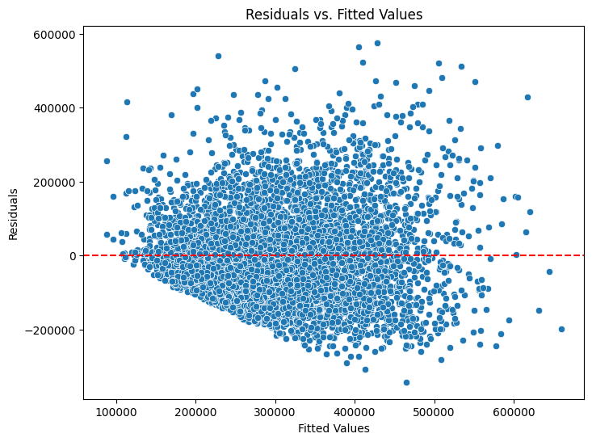
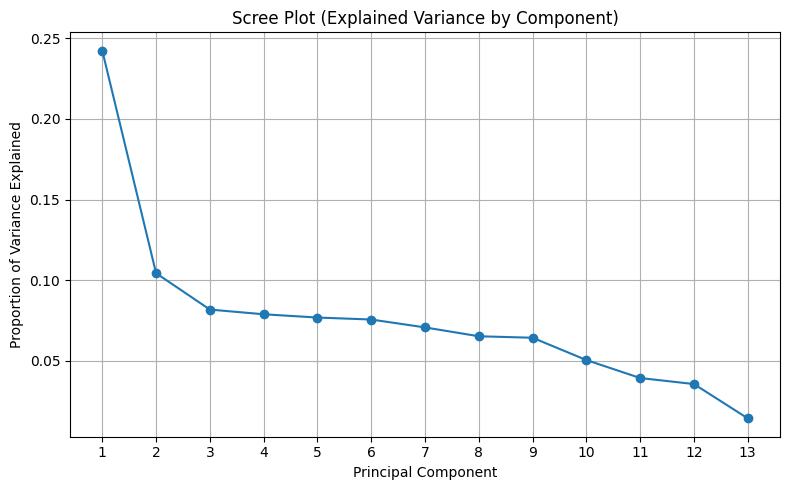

Business question
What useful patterns emerge when business, health, and retail datasets are cleaned, modeled, and tested with different analytical methods?
Approach
How the work was done
- Applied employee-turnover cleaning rules, retaining 4,464 of 10,199 records (43.8%). Missing-value, outlier and salary-consistency exclusions affect which employees remain.
- Applied regression, logistic regression, PCA and statistical tests. The insurance tests use 1,328 records after excluding ten low health-score records with the stated IQR rule.
- Started with 8,234 retail line items, grouped orders into 441 baskets and mined Apriori associations. The business-finance workflow also exports 40 state summaries and defines its additional ratio as long-term debt divided by revenue.
Results
What the analysis shows
- ANOVA found regional BMI differences (F = 39.4069, p < 0.001). The Mann–Whitney U test comparing charges by smoking status returned p ≈ 4.59 × 10⁻¹²⁹.
- The top Apriori rules linked themed children’s gift items, with 100% confidence and lift 88.2. Their 1.13% support represents only five of 441 baskets, so they suggest a small merchandising trial.
- The employee-turnover workflow retained 4,464 rows under its stated cleaning rules. The increase in salary/hourly correlation partly follows from the consistency filter; representativeness was not established.
From the project
Inspecting the housing models

Checking the price model’s errors
The spread and large residuals show where individual price estimates can miss. This plot checks the model using square footage and school rating, which explained 35.4% of training-set price variance.

Choosing a smaller representation
The first components capture the largest shares of variation in the predictors. This plot helps assess dimension reduction before examining the regression on home price.
Housing analysis
Three models on 7,000 properties
The final price model uses square footage and school rating and explained 35.4% of training-set price variance. The size-only comparison explained 29.5%. The PCA regression explained 62.9% on its training set. A separate logistic model correctly classified 67.21% of held-out properties as luxury or non-luxury. PCA preprocessing was fitted before the split, so its test error remains exploratory.
Business relevance
What this makes easier to decide
The market-basket rules create specific bundling and cross-sell hypotheses for merchandising teams to explore. Their 1.13% support describes a relatively narrow slice of the baskets, so the rules are best used to target experiments rather than assumed to generalize.